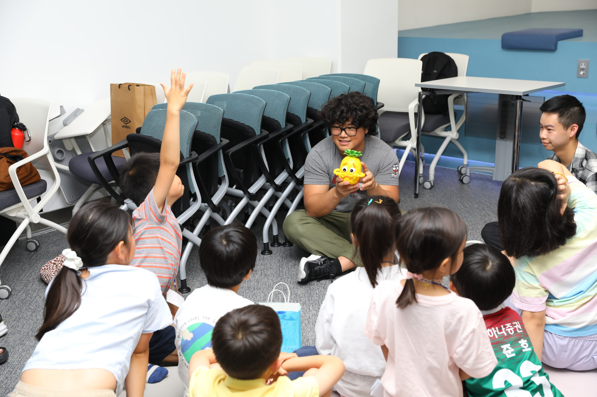
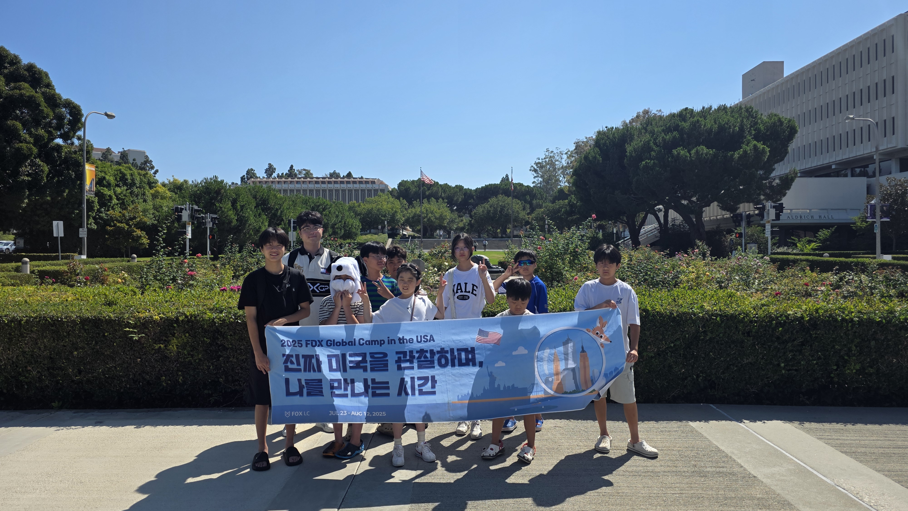

2024년 6월 · 한국 · 폭스러닝센터
서로의 문화와 마음 알아가기
한국·미국 놀이와 태권도를 함께하고,
표정과 몸짓으로 감정을 알아보며 자신의 경험을 나눴습니다.
관심 있는 캠프의 참여 대상·일정·기간·비용을 문의해주세요.
폭스러닝센터에서 한국과 미국 학생들이 만나 영어로 이야기하고,
서로의 문화와 관심사를 나눕니다.

2024년 6월 · 한국 · 폭스러닝센터
한국·미국 놀이와 태권도를 함께하고,
표정과 몸짓으로 감정을 알아보며 자신의 경험을 나눴습니다.

2025년 6월 · 한국 · 폭스러닝센터
한국·미국 학생들이 여러 감정을 담은 클레이 작품을 만들었습니다.
마음을 눈에 보이는 색과 표정으로 표현해 보는 활동입니다.
미국 학생·가족과 교류하고,
대학을 찾아 대학생과 이야기를 나누는 캠프입니다.

2024 미국 · 스톤랜치 초등학교
미국 학생들과 한 모둠으로 활동하며
함께 만드는 데 필요한 생각을 영어로 설명했습니다.

2025 미국 · 캘리포니아대학교 어바인
대학을 둘러보고 대학생과
대학 생활·전공 선택에 관한 이야기를 나눴습니다.

2025 미국 · 어바인 · 포트폴리오 작성
팀별로 갈 곳을 정하고 역할을 나눴습니다.
캠프 중과 종료 후에 경험과 활동 결과를 정리했습니다.
골프존 조이마루 2층
폭스러닝센터
카카오톡에서 FOX_LC를 검색해주세요.